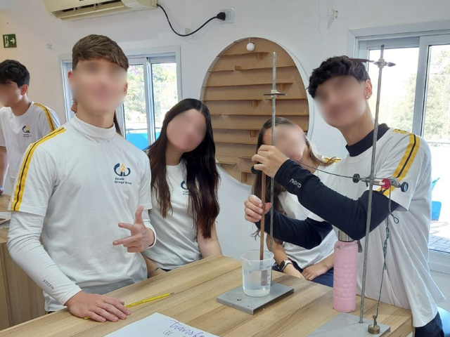
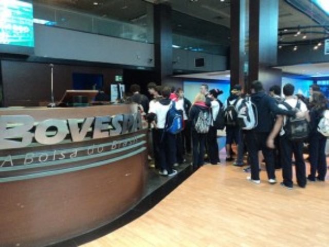
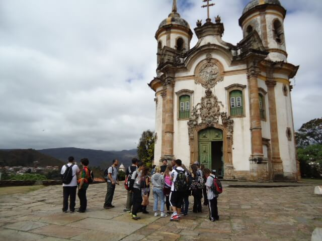
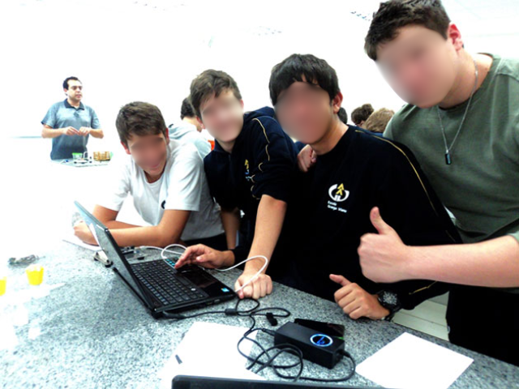
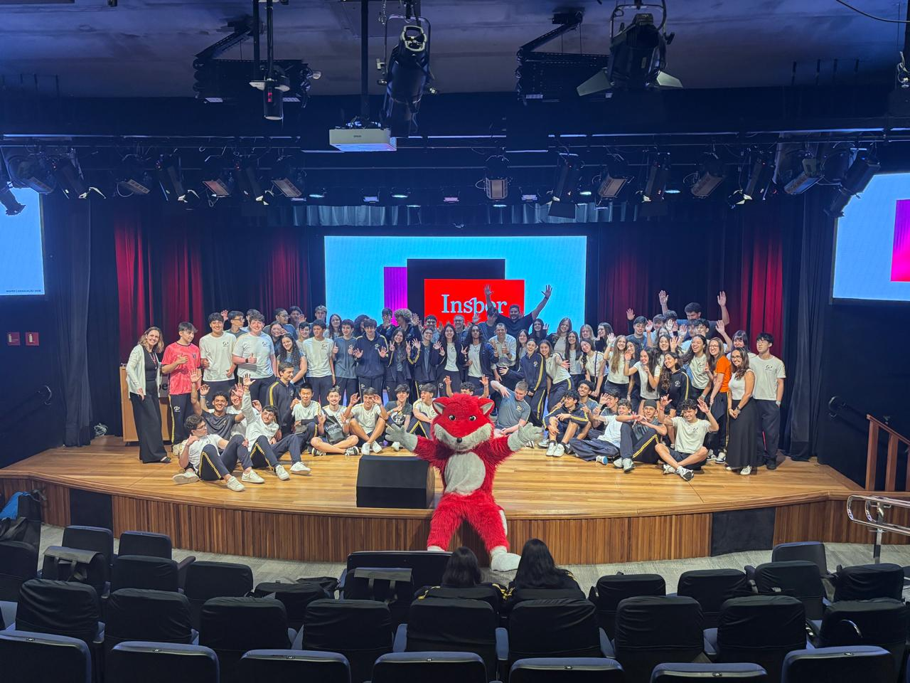
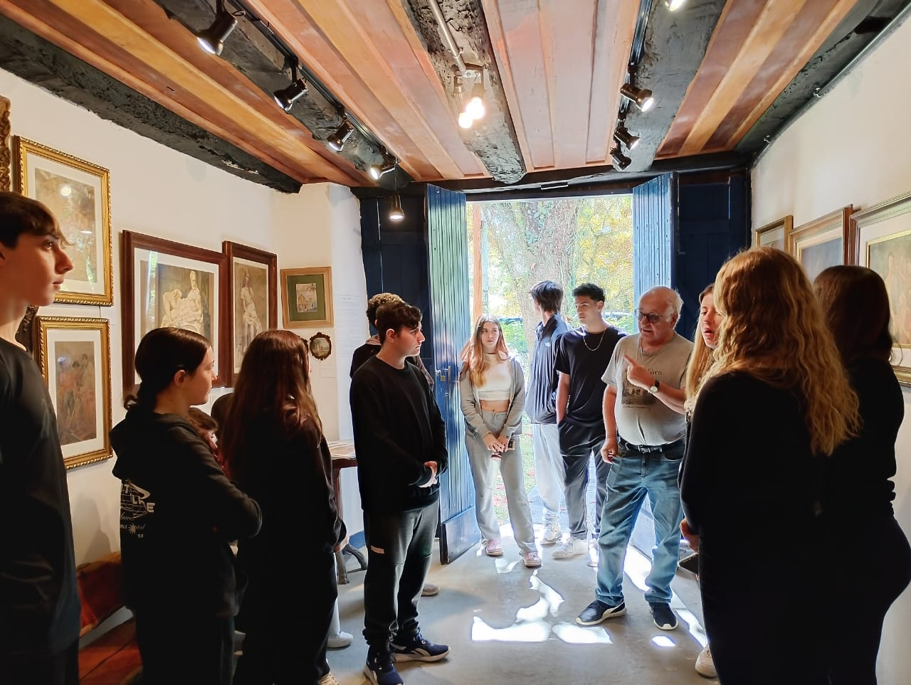
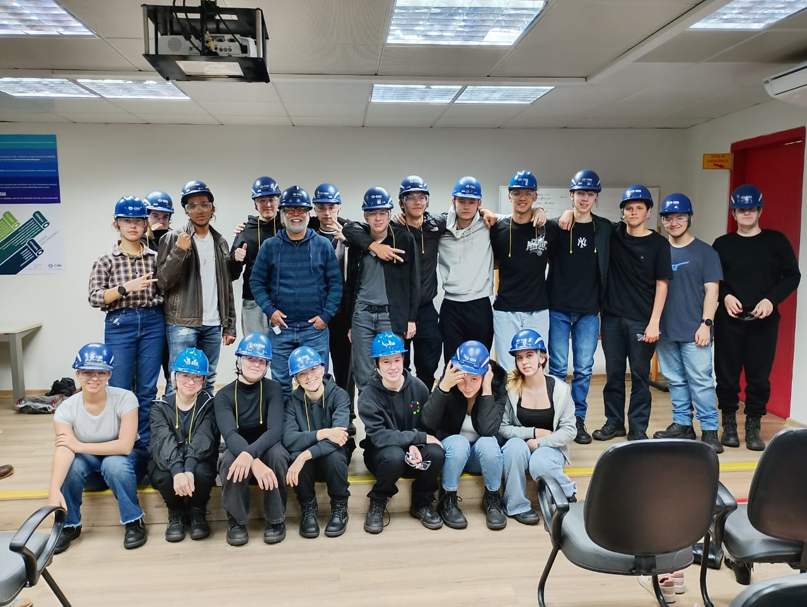
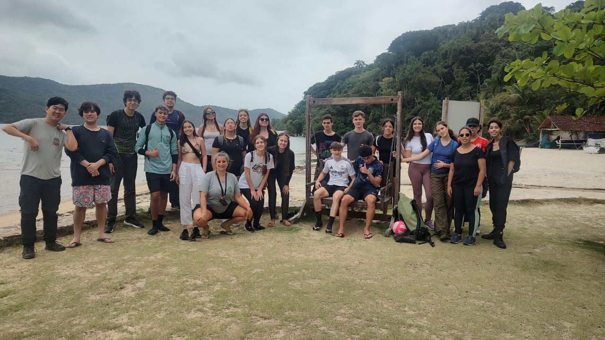

Na EGV, o Ensino Médio é muito mais do que preparação para o vestibular. É o momento em que o jovem consolida sua identidade, desenvolve autonomia, pensamento crítico e aprende a ser protagonista da própria história — com suporte, liberdade e significado.
Uma escola que forma jovens capazes de pensar, criar, dialogar e agir com responsabilidade — dentro e fora da sala de aula.
Na EGV, o jovem não é espectador do próprio aprendizado. Ele é desafiado a investigar, questionar, criar e apresentar — desenvolvendo autoria e voz ao longo de toda a jornada.
Cada estudante tem seu próprio ritmo e jeito de aprender. Os professores conhecem profundamente cada aluno e planejam estratégias diversificadas para potencializar cada percurso.
O Ensino Médio da EGV prepara para os principais vestibulares e o ENEM, combinando rigor acadêmico com uma formação humana que vai além dos conteúdos.
Conteúdos de diferentes disciplinas se encontram em projetos que exigem pensamento crítico, colaboração e aplicação prática do conhecimento em situações reais.
São mais de 20 mil m² de área verde em Cotia. O contato com a natureza faz parte do cotidiano — um diferencial único para a saúde física e mental dos jovens.
As avaliações são contínuas, paralelas e formativas — indicando com precisão o que foi aprendido e orientando a escola a reformular estratégias quando necessário.
Orientadora educacional, orientadora de aprendizagens e coordenação pedagógica trabalham junto com os professores para acompanhar cada aluno com respeito, afeto e confiança.
Alunos de destaque podem conquistar bolsas de estudo de até 40% no Ensino Médio, reconhecendo o esforço e comprometimento de quem se dedica.
O aprendizado sai da sala de aula e vai ao encontro do mundo. Cada turma tem um estudo de meio por ano, saídas culturais, oficinas e participação em olimpíadas.

Cada turma do Ensino Médio participa de um estudo de meio por ano com o fim de aprofundar in-loco conhecimentos teóricos apresentados em sala de aula, e desenvolver habilidades sociais, organizacionais e autonomia.

Contato direto com arte, história e cultura. As turmas visitam museus, exposições, espaços históricos e instituições que ampliam o repertório e conectam o conteúdo escolar à realidade cultural brasileira.

Robótica, programação, maker e outras oficinas curriculares que desenvolvem raciocínio lógico, criatividade e capacidade de trabalhar em equipe — competências cada vez mais valorizadas.

Participação em desafios intelectuais e científicos que estimulam a superação, o trabalho em equipe e o desenvolvimento de habilidades além do currículo regular.
Da visita à Bovespa ao Estudo do Meio em Ouro Preto — o aprendizado acontece em todos os lugares.



Famílias que acompanham seus filhos na jornada do Ensino Médio na EGV.
Na EGV, sinto que meu filho não é apenas um número. Ele é conhecido e cuidado por todos os professores e colaboradores. Isso faz toda a diferença nessa fase tão importante da vida dele.
O que me surpreendeu foi ver meu filho querendo ir à escola mesmo nas férias. A EGV conseguiu algo raro: um jovem que ama aprender e tem orgulho da escola onde estuda.
A escola prepara para o vestibular, claro — mas o que fica mesmo é a formação do caráter. Meu filho saiu da EGV sabendo se posicionar, trabalhar em equipe e pensar por conta própria.
Tudo que os pais mais querem saber sobre o Ensino Médio na EGV.
As vagas do Ensino Médio são limitadas. Fale com a gente e encontre o melhor momento para visitar a escola.